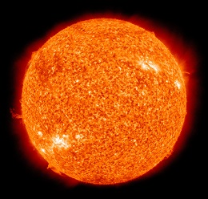
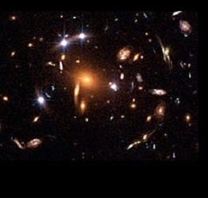
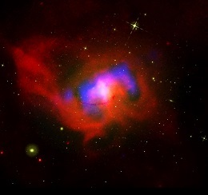

Our Solar System
Located within the vast Milky Way Galaxy
Understanding our Solar System
Our Solar System consists of the Sun which is our star, and everything that orbits around it - 8 planets and their natural satellites (such as our moon), dwarf planets and their satellites, as well as asteroids, comets and countless particles of smaller debris.
Learn More

The Sun
The Sun is considered to be the heart of our Solar System. It is a burning hot star and without it, there would be no life on Earth.
- Average diameter: 864,000 miles
- Rotation period at equator: About 27 days
- Surface temperature: 10,000 degrees Fahrenheit

Dark Matter
Dark Matter is "invisible" matter that we cannot detect.
- It might not be made up of the matter we are familiar with
- One way scientists indirectly study dark matter is by using gravitational lensing
- Scientists at NASA think they have a direct way to detect dark matter using the Fermi Gamma-Ray Space Telescope

Black Holes
A black hole is a place in space where gravity pulls so much that even light can not get out.
- Black holes can be big or small
- Scientists think the smallest black holes formed when the universe began
- NASA is using satellites and telescopes that are traveling in space to learn more about black holes